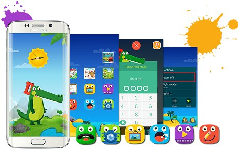
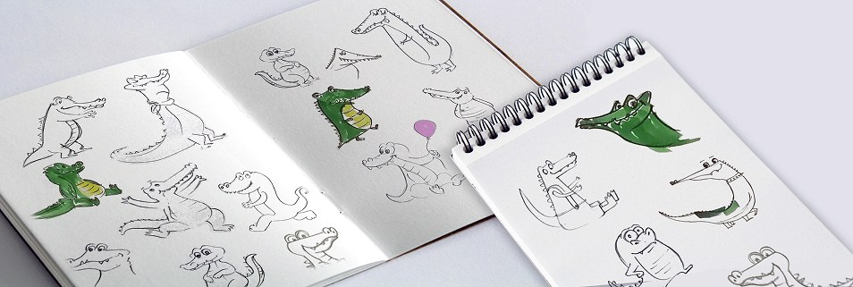
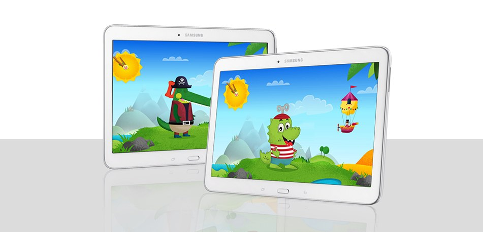

Designing a child-friendly experience for ages 2–6

Samsung developed Kids Mode, a tablet and mobile app for children aged 2–6. I joined the GUI team in Korea for the app's first two release phases — my first commercial project after graduating.
I worked with the design team to set guidelines for each screen component, handed off to development for implementation. During the character redesign phase, I also worked directly with Samsung's Korean design team on Croco, the app's main character.
The released Croco had a saw on its head — its teeth doubled as the character's mouth, changing size as he moved. My proposal was rounder and softer, with a key on his head (like a wind-up toy) so he could "fly" in animation. It wasn't chosen, but it stayed in consideration through the selection process.

Early sketches exploring a rounder, softer Croco.

My mockup of the redesigned Croco in context, styled to match Kids Mode's existing visual world.
Change happens slowly with characters people love
My redesign Croco was well received internally, but the team reminded me how attached kids already were to the original Croco. It taught me that improving something isn't only about the idea — it's about respecting what people already feel toward it.